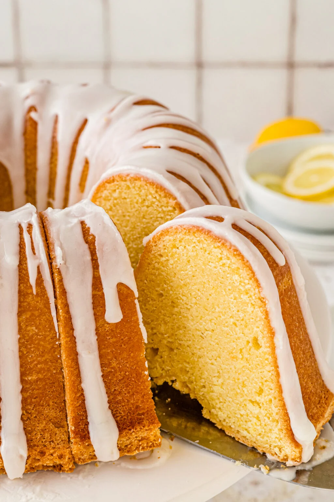

Cakes
Ingredients:
- 1 cup of softened butter
- 2 1/2 cups of sugar
- 4 large eggs
- 4 cups all-purpose flour
- 3 tsp baking powder
- 1 tsp salt
- 1/2 tsp baking soda
- 1 1/2 cups of sour cream
- 6 colors of food coloring
- FROSTING:
- 2 cups of butter softened
- 6 cups confectioners' sugar, sifted
- 2 teaspoons vanilla extract
- 1/4 to 1/3 cup heavy whipping cream
- Sprinkles
- Preheat oven to 350°. Line bottoms of 3 greased and floured 8-in. round baking pans with parchment; grease paper. In a large bowl, cream butter and sugar until light and fluffy, 5-7 minutes. Add eggs, 1 at a time, beating well after each addition. Combine flour, baking powder, salt and baking soda; add to the creamed mixture alternately with sour cream, beating well after each addition. Divide batter into equal portions, with 1-1/4 cups in 6 separate bowls. Tint each portion a different color with food coloring. Cover and refrigerate 3 portions.
- Transfer 3 remaining portions to prepared pans. Bake until edges begin to just brown, 13-15 minutes. Cool for 10 minutes before removing from pans to wire racks to cool completely. Cool, wash and dry pans. Repeat with remaining batter.
- For frosting, in a large bowl, beat butter until fluffy. Gradually beat in confectioners' sugar. Beat in vanilla and enough cream to reach desired consistency. Spread frosting between layers and over top and side of cake. Decorate with sprinkles.
Ingredients:
- 1/2 cup of granulated sugar
- 1/4 of melted salted butter
- 1 large eggs
- 1 1/2 cups ofall-purpose flour
- 1/2 cup of whole milk
- 1-2 pounds of Strawberries
- 2-4 cups of whipped cream
- 1 tsp of vanilla extract
- 2 tsp of baking powder
- Prepare the strawberries by cutting or slicing and placing in a bowl with a little sugar on top and a dash of lemon juice. Place in the refrigerator for about 30 minutes before making the shortcake.
- Preheat the oven to 350° and grease a 9-inch square baking dish (or line it with parchment).
- In a medium bowl, add the sugar and melted butter and stir to combine well.
- Add the egg and vanilla and stir to combine. Add the flour, baking powder, and salt, and beat with a stand mixer on medium-high speed to combine.
- Add the milk and beat again until the mixture is smooth with no lumps. Place the batter in the prepared pan. Bake for 20-25 minutes, until the cake is lightly golden brown and springs back when lightly touched.
- Remove from the oven and allow to cool at least 30 minutes before serving. To serve, slice the cake into 9 pieces. Remove one piece from the pan and split it down the middle. Top half of the cake with strawberries and whipped cream, add the second half of cake, and top with more whipped cream and strawberries.

Ingredients:
- 1 3/4 cups of Honey Maid Graham Cracker crumbs
- 1/3 cup of butter
- 1 1/4 cups of sugar
- 3 (8 ounce) packages of cream cheese, softened
- 1 cup of sour cream
- 2 tsp of vanilla extract
- 3 large eggs
- 1 (21 ounce) can cherry pie filling
- Preheat oven to 350 °F. Mix graham crumbs, butter, and 1/4 cup sugar together in a large bowl.
- Press crumbs onto bottom of 9-inch springform pan. Beat cream cheese and remaining sugar in large bowl with mixer until blended. Add sour cream and vanilla; mix well.
- Add eggs, 1 at a time, beating on low speed after each addition just until blended. Pour mixture over crust.
- Bake in the preheated oven until the center is almost set, about 1 hour to 1 hour 10 minutes. Run knife around rim of pan to loosen cake; cool before removing rim. Refrigerate cheesecake 4 hours.
- Top with pie filling before serving.

Ingredients:
- 3 cups all-purpose flour
- 1/2 tsp baking soda
- 1/2 tsp salt
- 1 cup of unsalted butter at room temperature
- 3 cups of sugar
- 6 eggs at room temperature
- 1/3 cup of lemon juice
- 1 1/4 tsp grated lemon zest
- 1 cup of sour cream
- Preheat oven to 325 degrees. Grease tube or bundt pan. Dust pan with flour, then tap out excess.
- Sift flour, baking soda and salt into medium bowl, set aside. Using electric mixer, beat butter in large bowl at lot to medium speed until fluffy. Gradually add sugar and beat for 5 minutes.
- Add eggs 1 at a time, beating just until combined after each egg is added. Beat in lemon juice and zest. Using a rubber spatula, mix in dry ingredients. Mix in sour cream.
- Pour batter to prepared pan. ** The batter will be thick. Bake cake until tester inserted near center comes out clean, about 1 hour 20 minutes.
- Let cake cool in pan on rack 15 minutes then turn out cake onto a plate or cake stand. Carefully turn cake right side up on rack and cool completely.
- For an extra touch – drizzle glaze made of 1 cup confectioners sugar and 2-3 tablespoons of fresh lemon juice over cake.
Pies
Ingredients:
- 2 (9") pie crusts
- 7 large granny smith apples
- 1/2 cup granulated sugar
- 1/2 cup light brown sugar
- 2 tsp all-purpose flour
- 1 tsp ground cinnamon
- 1/8 tsp ground nutmeg
- 1 tsp lemon juice
- 1 large egg
- 2 tsb sanding sugar
- Start by preparing this flaky pie crust recipe which makes 2 (9") pie crusts, one for the bottom and one for the top of the pie. The pie dough will need to chill for at least 1 hour before rolling out. Or use a store-bought pie crust and follow package directions.
- Place oven rack in the center position and Preheat the oven to 400°F. In a large bowl, combine the sliced apples, granulated sugar, light brown sugar, flour, cinnamon, nutmeg, and lemon juice and lemon zest; toss to coat evenly.
- Remove the pie crust dough from the fridge and let rest at room temperature for 5-10 minutes. On a lightly floured surface, roll one disc into a 12" circle that is ⅛" thick. Carefully lay the crust into the bottom of a deep dish pie plate.
- Spoon the apple filling over the bottom crust and discard juices at the bottom of the bowl. Roll out the second disc of pie crust until it is ⅛" thick and lay it over the apple filling.
- Use a sharp knife to trim the dough along the outside edge of the pie plate. Lift the edges where the two pie crust meet, gently press to seal and fold them under. Rotate the pie plate and repeat this process until edges are neatly tucked under themselves. Cut 4 slits in the top of the dough to allow steam to vent. Place the pie on a baking sheet.
- Brush the surface of the pie crust with the egg wash and sprinkle with sanding sugar. Cover the edges with a pie shield or a strip of foil to keep them from over browning during the first 25 minutes.
- Bake at 400°F (204°C) for 25 minutes. Carefully remove the pie shield, turn the oven down to 375° and continue to bake for an additional 30-35 minutes or until the top is golden brown and the juices are bubbly. Cool at room temperature for at least 3 hours.
Ingredients:
- PIE CRUST:
- 1 1/4 cups all-purpose flour
- 2 teaspoons granulated sugar
- 1/4 teaspoon salt
- 8 tablespoons (1 stick) cold, unsalted butter, cut into cubes
- 4 tablespoons ice-cold water
- FILING:
- 15 ounce can pure pumpkin puree (1 3/4 cups) , not pumpkin pie filling, or use homemade pumpkin puree*
- 3 eggs
- 3/4 cup packed light brown sugar
- 3/4 cup heavy cream
- 1/2 cup whole milk
- 1 tablespoon cornstarch
- 1 1/2 teaspoons ground cinnamon
- 1 1/2 teaspoon ground ginger
- 1/4 teaspoon ground cloves
- 1/4 teaspoon allspice
- 1/4 teaspoon ground nutmeg
- 1/4 teaspoon salt
- PIE CRUST:
- Place flour, sugar, and salt in the bowl of a food processor and pulse a few times to combine. (Alternatively, the pie dough may be made by hand in a large bowl using a pastry cutter to blend in the butter and a fork to bring the dough together.)
- Add the cold butter cubes and pulse until the largest pieces of butter are the size of small peas, about 8 pulses. Add the ice-cold water and pulse until the dough just comes together, adding more water by the teaspoonful as needed.
- Turn dough out onto a floured work surface and form into a round disk. Roll the dough into a 12-inch round. Transfer dough round to a 9-inch deep dish pie dish that is 2 inches deep by wrapping it partway around the rolling pin. Gently fit the dough into the pie dish, but do not press it down firmly against the dish. Trim the dough edges as needed around the pie plate and then fold edges under. Use your fingers to crimp the edges of the pie crust as desired. Place pie crust in refrigerator while you prepare the filling.
- FILING:
- Preheat oven to 375° F. In a large bowl, combine pumpkin puree, eggs, brown sugar, heavy cream and milk. Whisk until smooth. Add the cornstarch, cinnamon, ginger, cloves, allspice, nutmeg, and salt. Whisk until well combined and no clumps of cornstarch or spices remain.
- Pour the filling into the unbaked pie crust. Bake at 375° for 40-55 minutes. Halfway through baking, check on the pie and loosely cover the pie crust with foil or use pie protectors to prevent the crust from over-browning The pie is done when the filling is set but the center jiggles just a little bit when you wiggle the pan. The pie will continue to set up as it cools. (Overbaking can cause cracks in the pie filling as it cools.)
- Cool pie on a wire rack for 3 hours and then transfer to the refrigerator to chill for a few hours or overnight before serving. The pie flavor will develop overnight and it will taste even better on the second day.

Ingredients:
- PIE CRUST:
- 1 all-butter pie crust
- 1 Tbsp. heavy whipping cream
- FILING:
- 3 cups half-and-half
- 1 1/2 cups granulated sugar, divided
- 5 large egg yolks
- 1/4 cup cornstarch
- 1 Tbsp. instant espresso powder
- 1/4 tsp. kosher salt
- 6 oz. bittersweet (60%) chocolate, chopped
- 2 Tbsp. unsalted butter
- 2 tsp. vanilla extract
- MERINGUE:
- 5 large egg whites
- 1 1/3 cups granulated sugar
- 1/4 tsp. cream of tartar
- 1/4 tsp. kosher salt
- 1/2 tsp. vanilla extract
- For the crust: Preheat the oven to 400˚F.
- On a lightly floured surface, roll the pie dough into a 14-inch circle. Transfer the crust to a 9-inch deep-dish pie plate. Tuck the edges of the crust under to be even with the edge of the pie plate and crimp as desired. Place the crust in the freezer for 30 minutes.
- Line the inside of the crust with parchment paper, then fill with baking weights or dried beans. Bake until the edges of the crust are very lightly golden, 16 to 18 minutes. Remove the pie weights and parchment paper; brush all over with the heavy whipping cream and prick the bottom of the crust with a fork 6 to 8 times. Return to the oven and bake until the crust is golden brown all over, 12 to 14 minutes more. Let cool to room temperature.
- For the filling: In a large saucepan, heat the half-and-half and 1 cup of sugar over medium-low heat until steaming.
- In a large bowl, whisk the egg yolks, the remaining ½ cup sugar, cornstarch, espresso powder, and salt until well combined and lightened in color. Whisking constantly, slowly add about 1 cup of the steaming half-and half to the egg yolk mixture. Whisk the egg yolk mixture until well combined and no lumps remain. Add the egg mixture to the remaining half-and-half. Place the chocolate and butter in the now-empty bowl.
- Increase the heat to medium and simmer, stirring constantly, until the mixture becomes thick, 6 to 8 minutes. Pour the mixture over the chocolate and butter and allow to sit for 1 to 2 minutes. Stir the mixture until the chocolate is melted and everything is well combined. Stir in the vanilla.
- Pour the pudding into the pie crust. Place in the refrigerator to chill uncovered until set, 3 to 4 hours.
- For the meringue: Place a medium saucepan filled with 1 inch of water over medium heat and bring to a simmer. In the metal bowl of a stand mixer fitted with the whisk attachment, whisk together the egg whites, sugar, cream of tartar, and salt until combined. Place the bowl over the saucepan of simmering water, and cook, stirring constantly, until the sugar is dissolved and the mixture is about 160°F, 3 to 5 minutes.
- Carefully remove the bowl from the saucepan, and add the vanilla. Return the bowl to the stand mixer and beat at medium-high speed until the mixture is cool, glossy, and holds a medium-stiff peak.
- Dollop the meringue over top of the pie to completely cover the chocolate filling and swirl with the back of a spoon to make decorative swoops and swirls.
- Toast the meringue with a kitchen torch or place under a broiler (about 8 inches from the broiler heated to high heat) for 1 minute, until lightly toasted. Let cool completely to room temperature, then serve.

Ingredients:
- PIE CRUST:
- 34 speculaas cookies (8 oz.), such as Biscoff
- 1 heaping cup pretzel sticks (2 oz.)
- 3/4 cup salted butter, melted
- 1/4 cup light brown sugar
- FILING:
- 1/4 cup hot water
- 3 Tbsp. instant espresso powder
- 1 (14-ounce) can sweetened condensed milk
- 1 tsp. vanilla extract
- Pinch kosher salt
- 2 cups heavy whipping cream
- TO SERVE:
- 1 Heath bar, chopped
- Caramel sauce, for drizzling
- For the crust: Preheat the oven to 350˚F.
- Place the cookies in a resealable plastic bag. Use a rolling pin to crush them into fine crumbs. Remove the crumbs to a large bowl. Place the pretzels into the same bag and crush finely. Add to the large bowl with the cookie crumbs. Stir in the melted butter and brown sugar. Press the crust into the bottom and up the sides of a 9-inch deep-dish pie plate.
- Bake until the crust is dry and fragrant, 10 to 12 minutes. Allow to cool completely on a wire rack. For the filling: In a large bowl, combine the hot water and instant espresso powder, whisking until dissolved. Whisk in the sweetened condensed milk, vanilla, and salt until well combined.
- Using a hand mixer or a stand mixer fitted with the whisk attachment, beat the cream at medium-high speed until medium peaks form, 2 to 3 minutes. Add the sweetened condensed milk mixture to the cream and beat at medium-high speed until stiff peaks form, 2 to 3 minutes more. Pour the mixture into the cooled crust, spreading and swooping the filling.
- Freeze, uncovered, until firm, 4 to 6 hours.
- To serve: Slice the pie into wedges. Serve with Heath bar pieces and caramel sauce.
Cookies

Ingredients:
- 2 ounces unsweetened chocolate, chopped
- 1/2 cup butter, softened
- 2/3 cup packed brown sugar
- 1/3 cup sugar
- 1 large egg, room temperature
- 1 tablespoon red food coloring
- 1 teaspoon vanilla extract
- 2 cups all-purpose flour
- 1/2 teaspoon baking soda
- 1/2 teaspoon salt
- 1 cup sour cream
- 1 cup semisweet chocolate chips
- 1 can (16 ounces) cream cheese frosting
- Sprinkles, optional
- In a microwave, melt unsweetened chocolate; stir until smooth. Cool.
- In a large bowl, cream butter and sugars until light and fluffy, 5-7 minutes. Beat in the egg, food coloring and vanilla. Add cooled chocolate; beat until blended. In another bowl, mix the flour, baking soda and salt; add to creamed mixture alternately with sour cream, beating well after each addition. Stir in chocolate chips.
- Drop by tablespoonfuls 2 in. apart onto parchment-lined baking sheets. Bake at 375° for 6-9 minutes or until set. Remove to wire racks to cool completely. Spread with frosting. If desired, decorate with sprinkles.
Ingredients:
- 1 cup butter, softened
- 1 cup sugar
- 2 large eggs
- 1 teaspoon vanilla extract
- 2-1/4 cups all-purpose flour
- 1/2 teaspoon baking powder
- 1/4 teaspoon salt
- 1-1/2 cups semisweet chocolate chips
- 1-1/2 cups dried cranberries
- 3/4 cup chopped pecans
- 1/2 cup English toffee bits or almond brickle chips, optional
- In a large bowl, cream butter and sugar. Add eggs and vanilla; mix well. Combine the flour, baking powder and salt; gradually add to the creamed mixture and mix well. Stir in chocolate chips, cranberries, pecans and toffee bits if desired (dough will be stiff).
- Drop by rounded tablespoonfuls 2 in. apart onto ungreased baking sheets. Flatten slightly. Bake at 350° for 11-14 minutes or until set and edges are lightly browned. Cool for 2 minutes before removing to wire racks.
Ingredients:
- 1/3 cup butter, softened
- 1/2 cup sugar
- 1 large egg, room temperature
- 1/2 cup mashed ripe banana
- 1/2 teaspoon vanilla extract
- 1-1/4 cups all-purpose flour
- 1 teaspoon baking powder
- 1/4 teaspoon salt
- 1/8 teaspoon baking soda
- 1 cup semisweet chocolate chips
- In a small bowl, cream butter and sugar until light and fluffy, 5-7 minutes. Beat in the egg, banana and vanilla. Combine the flour, baking powder, salt and baking soda; gradually add to creamed mixture and mix well. Stir in chocolate chips.
- Drop by tablespoonfuls 2 in. apart onto baking sheets coated with cooking spray. Bake at 350° for 13-16 minutes or until edges are lightly browned. Remove to wire racks to cool.
Ingredients:
- 6 large eggs, room temperature
- 5 cups all-purpose flour
- 2 cups confectioners' sugar
- 2 tablespoons plus 1-1/2 teaspoons baking powder
- 1 cup shortening
- 3 teaspoons almond extract
- 1-1/2 teaspoons lemon extract
- GLAZE:
- 3-3/4 cups confectioners' sugar
- 1/2 cup warm 2% milk
- 1 teaspoon almond extract
- 1 teaspoon vanilla extract
- Colored sprinkles
- Using a heavy-duty mixer, beat eggs on high speed until light and foamy, about 5 minutes; set aside. In a large bowl, combine the flour, confectioners' sugar and baking powder; on low speed, gradually beat in shortening and extracts until mixture resembles fine crumbs. Gradually add beaten eggs (dough will be stiff).
- Roll dough into 1-in. balls. Place 2 in. apart on ungreased baking sheets. Bake at 350° for 12-14 minutes (tops of the cookies will not brown, but bottoms should brown slightly).
- Meanwhile, in a small bowl, combine the confectioners' sugar, milk and extracts until smooth. As soon as cookies are removed from the oven, quickly dip 2 or 3 at a time into glaze. Remove with a slotted spoon or tongs; place on wire racks to drain. Immediately top with sprinkles. Let dry for 24 hours before storing in airtight containers.